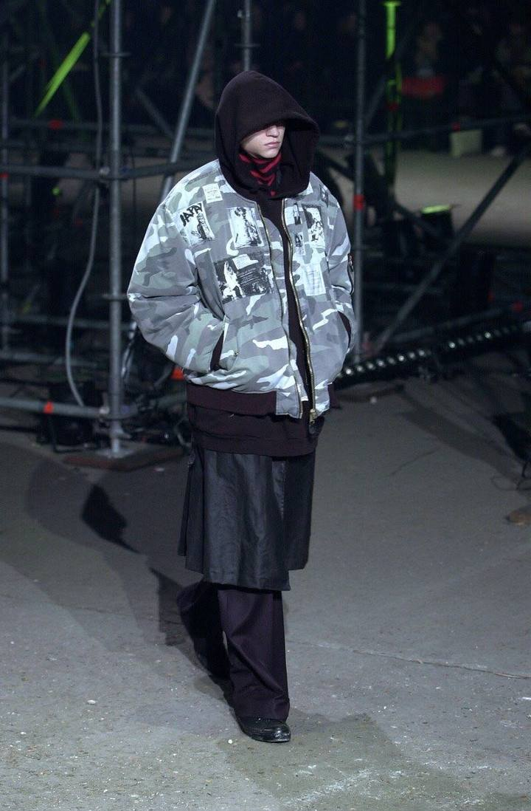

Deep Dives
The stories behind the pieces.
Longer reads on the designers, seasons and collecting habits that shape the archive market.
Each one ends with what the piece actually means for someone buying today.

Designer history · 6 min read
Why Raf Simons archive pieces still sell out
Raf Simons trained as an industrial designer, not a tailor, and launched his menswear label in
1995. His early collections pulled from youth culture: skinny schoolboy tailoring, punk and
new-wave music, and a mood of teenage rebellion that felt new on a Paris runway.
Collectors focus on a handful of early-2000s seasons, especially Autumn/Winter 2001, often
called "Riot Riot Riot," and the 2003 collaboration with graphic designer Peter Saville, which
put record-sleeve artwork onto parkas and knits. Bombers and parkas from this era rarely surface,
and when they do they move quickly.
When Simons closed his own label in 2022, the supply of new pieces stopped completely. That is
the short version of why prices keep climbing: a fixed number of garments and a growing number
of people who want them.
Buying tip: ask for photos of every label and tag, and check that the
season code matches the collection the seller claims.

Beginner guide · 5 min read
A beginner’s guide to Japanese labels
Japanese designers changed how the West thought about clothing. Yohji Yamamoto’s Paris debut in
1981 introduced oversized black garments that ignored the usual rules of fit. Junya Watanabe
trained under Rei Kawakubo at Comme des Garçons before launching his own line under its umbrella,
known for reworked workwear and patchwork denim.
Jun Takahashi’s Undercover mixed punk graphics with careful construction, while Mastermind Japan
turned the skull and crossbones into a luxury signature. Start with one designer, learn their
tags and fabrics, then branch out.

Collecting · 4 min read
What a collector’s closet teaches you
Strong archive closets are built slowly. Most serious collectors pick a lane, such as Chrome Hearts
silver or If Six Was Nine leather, and buy fewer, better pieces. They keep receipts, original
tags and photos, because that paper trail becomes part of the garment’s value when it is resold.
Storage matters too: wide hangers for leather, breathable garment bags, and silver kept away
from humidity to slow tarnish.